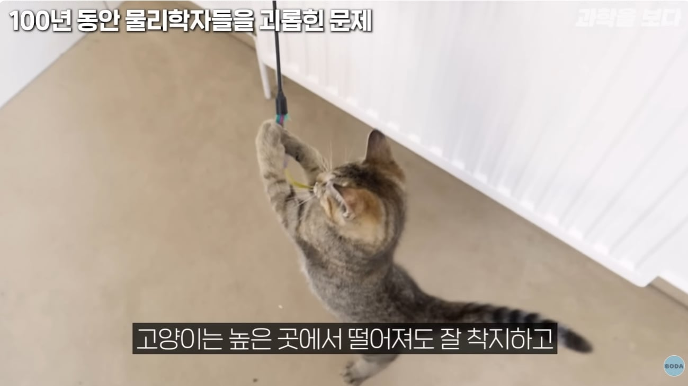
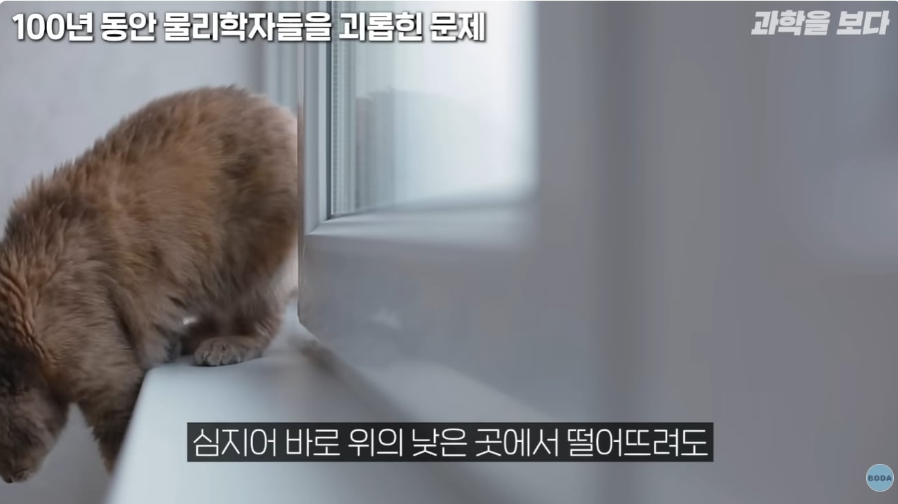
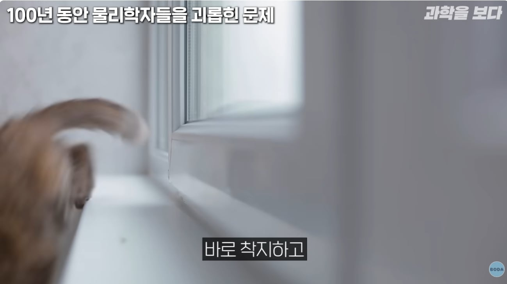
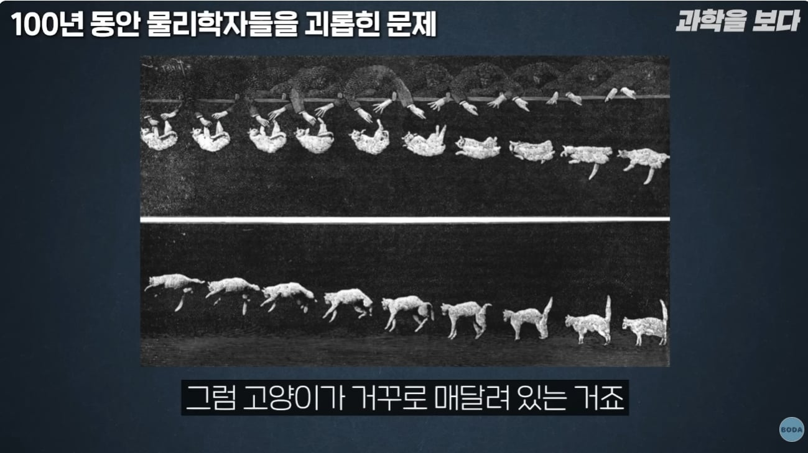
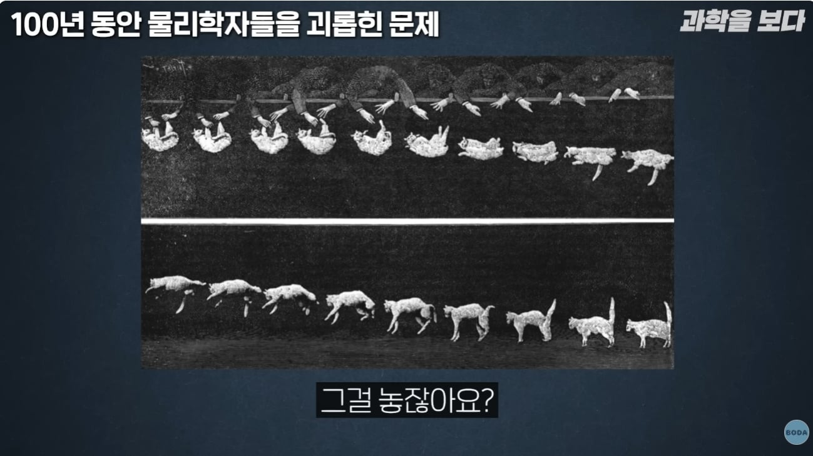
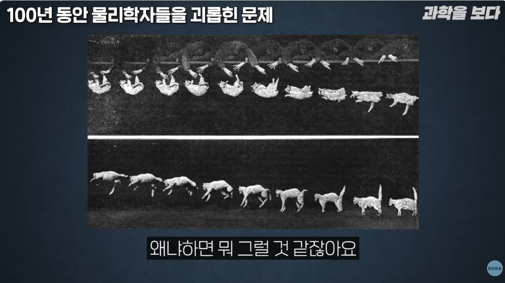
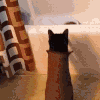
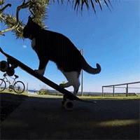

인간 빡치게 만들기도 잘 함
고양이는 액체잖아
단또 단또

그럼 등을 핀 상태에서 떨구면 못뒤집음?
그렇겠네
그럼 우주에서 저렇게하면 뒤집을 수 있겠네?
오...?
https://www.youtube.com/watch?v=BniWrj1GhcA
찾아봤는데 뻘하게 웃기네 ㅋㅋㅋㅋㅋㅋ
냥이답게 발작하는 거 개 웃기네 ㅋㅋㅋ
ㅋㅋㅋㅋㅋ 잘 뒤집긴하네
ㅋㅋㅋㅋㅋㅋㅋ마지막에 살려달라하네 ㅋㅋㅋㅋ
앞으로 척추에 부목 대고 떨어트릴게요
아하 그렇군 완벽히 이해했어
등에 집게 찝으면 고장 나는 이유도 저쪽이 망가지니 못 움직이는건가
그건 등에 있는 감각느끼는 털 건드려서 등위에 뭐가 있는 걸로 착각하는 거



봐도 모르겠는데요...
https://youtu.be/Z8yW5cyXXRc
이해 안되면 이거
완벽히 이해했다
완벽히 이해했어
이거 도치야 고맙다!
아 이 원리구나

왐마 ㅋㅋㅋㅋㅋㅋ
아파트옥상에서 던져도 살음??
죽더라
네?
그걸 님이 어떻게... 혹시 페미랑 묶어서 던ㅈ...
너 몇 층 사냐
18


근데 궁금한데 얘네 고산지대가 아니라 사막에서 살았던 동물 아니냐
왜 저렇게까지 발달한거지...
사막에서 살려고
피라미드에서 뛰어내려서 살아남지 못한 고양이는 도태되었다
집 고양이 조상인 아프리카 들고양이의 조상부터 있던 능력이라
호랑이나 사자도 된다더라
나무 타고 다니던 시절부터 있던건가
유래가 깊구만
그 둔한 고양이는 저거못하더라
이제 잼 바른 빵을 등에 붙이자고
정영진 저 선글라스 낀 양반 ㅈㄴ 보기싫다. 옳그떠 양반 모자이크해라

꼬리 돌려서 일부 회전 받는거 같던데
뇌용량은 적은게 저거 하나에 몰빵된건가